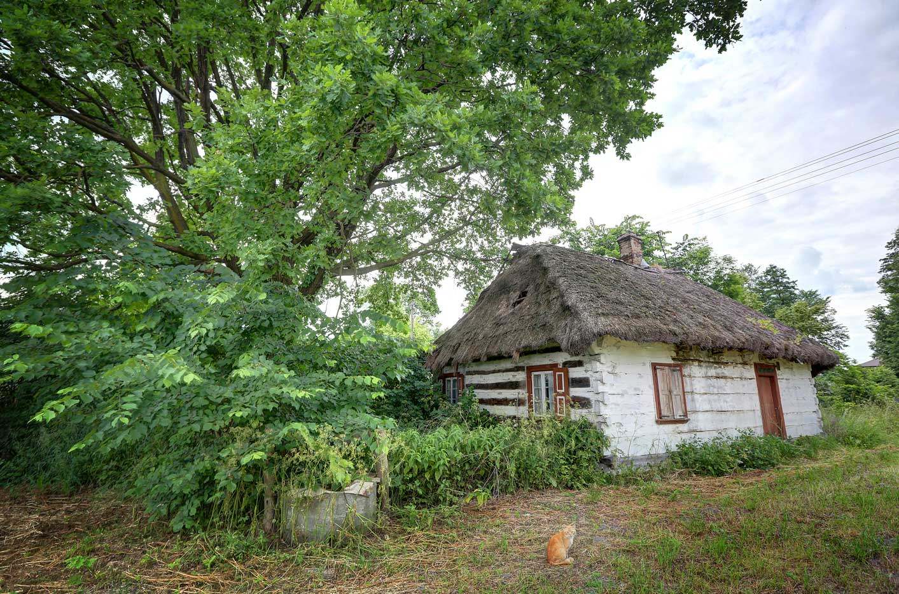
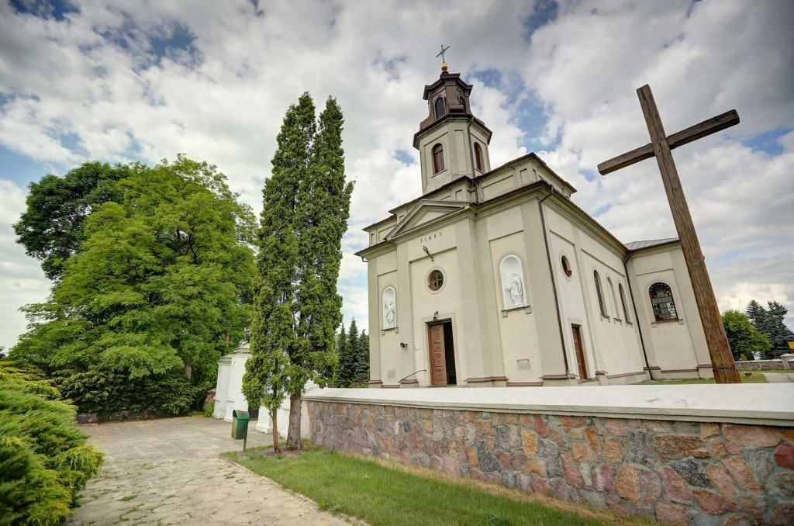

Historia Gminy Trzebieszów
Początki Trzebieszowa
Pierwsze wzmianki o miejscowości Trzebieszów pochodzą z roku 1418. Z dokumentów biskupa i byłego kanclerza królowej Jadwigi, późniejszego prymasa Polski, Wojciecha Jastrzębca. Z tego dokumentu wynika, że w 1418 roku parafia Trzebieszów jeszcze nie istniała, a Trzebieszów wraz z okolicznymi wsiami należał do parafii w Łukowie.
Drugi dokument dotyczący Parafii Trzebieszów został wydany przez polskiego króla Władysława Jagiełłę w Sandomierzu dnia 14 marca 1430 roku. Z dokumentu z 1430 roku pochodzi wzmianka o istnieniu już wtedy kościoła w Trzebieszowie uposażonego finansowo przez króla Władysława Jagiełłę. Wówczas przez Trzebieszów biegł trakt królewski z Krakowa do Wilna, z którego monarchowie polscy, a zwłaszcza z dynastii Jagiellonów często korzystali.
W Trzebieszowie była stacja królewska, tzn. obowiązek goszczenia panującego z dworem, a także jego urzędników i wysłanników. Obowiązek ten utrzymał się w Polsce (po części zamienny na określone świadczenia pieniężne) w dobrach królewskich i klasztornych aż do czasów nowożytnych. Przodkowie wsi Trzebieszów, to potomkowie szlachty zagrodowej, którą cechowało przywiązanie do tradycji i kultury chrześcijańskiej.
Pochodzenie nazwy Trzebieszów
Nazwy wielu miejscowości wchodzących w skład gminy Trzebieszów wywodzą się od nazwisk tutejszej szlachty. Dla przykładu w gminie zamieszkiwali i zamieszkują nadal potomkowie Szaniawskich, rodu, do którego należały niegdyś Szaniawy. W miejscowości Celiny przewaga nazwisk to Celińscy. W Karwowie sytuacja wygląda podobnie dominuje nazwisko Karwowski. Dla odróżnienia poszczególnych rodzin we wsi nadawano im przydomki. Wywodziły się one od ojca rodziny.
Sama nazwa ,,Trzebieszów” pochodzi od słowa ,,trzebież”, które z kolei wywodzi się ze zwrotu trzebić (to znaczy ścinać drzewa, wycinać las).
Znaczenie Trzebieszowa w przeszłości
Trzebieszów leżał na skrzyżowaniu ważnych dróg: traktu pomiędzy Krakowem a Wilnem oraz szlaku prowadzącego przez Polskę do Moskwy, co przyczyniło się do jego rozwoju.
Parafia i kościół
Parafia w Trzebieszowie została erygowana prawdopodobnie w 1430 roku. Fundatorem pierwszego, drewnianego kościoła był według tradycji Władysław Jagiełło.
Nowy, murowany kościół pod wezwaniem Św. Mikołaja został pobudowany w 1863 roku.
Okres wojenny i współczesność
Wiek XX przyniósł dalszy rozwój zapoczątkowanych w poprzednim stuleciu masowych ruchów politycznych: robotniczego i ludowego. W tym pierwszym największą rolę odgrywała Polska Partia Socjalistyczna, w której władzach zasiadał wówczas Józef Piłsudski. Był on zagorzałym przeciwnikiem caratu i nawoływał do walki z nim wszelkimi możliwymi środkami. Dlatego też w 1907 r. łukowski oddział bojowy PPS wykonał na terenie powiatu łukowskiego szereg akcji zbrojnych na monopole i kasy dla zdobycia pieniędzy na rozbudowę organizacji, zakup broni, na akcję agitacyjną, pomoc więźniom politycznym oraz na walkę o trzeźwość w społeczeństwie, będącą wyrazem protestu moralnego przeciwko carskiej polityce celowego rozpijania społeczeństwa.
Latem 1914 roku wybuchła I wojna światowa, której działania toczyły się w dużej mierze na ziemiach polskich. W wyniku ofensywy państw centralnych, w sierpniu 1915 r. ostatnie oddziały wojsk rosyjskich (w których służyli Polacy z zaboru rosyjskiego) wycofują się z Ziemi Łukowskiej na wschód. Wkraczają zaś wojska austriackie i niemieckie (w których również służyli Polacy – z tych zaborów). Początkowo Ziemia Łukowska pozostaje pod zarządem austriackim, a od października 1915 r.- niemieckim.
Po II wojnie światowej gmina Trzebieszów została utworzona na podstawie Uchwały WRN w Lublinie z 5 grudnia 1972 roku.
Urząd Gminy w Trzebieszowie rozpoczął działalność od 1 stycznia 1973 roku. Wlatach 1975-1998 gimna położona była w województwie sieldeckim, a obecnie należy do województwa lubelskiego.
W 1990 roku Ustawa o samorządzie terytorialnym zmieniła zakres kompetencji gminy oraz podział zadań między gminą a organami administracji państwowej.